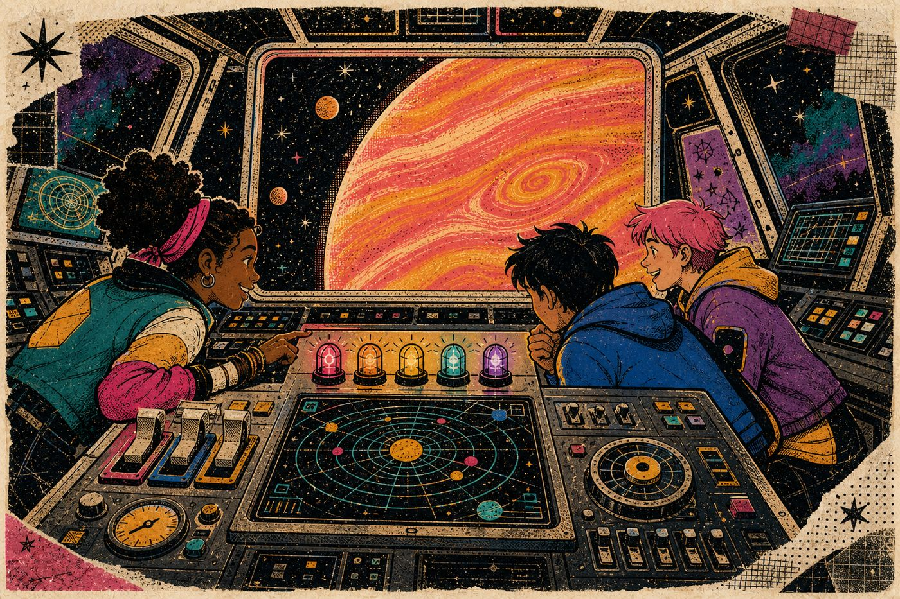
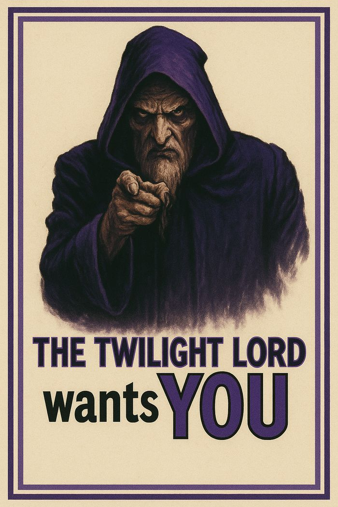
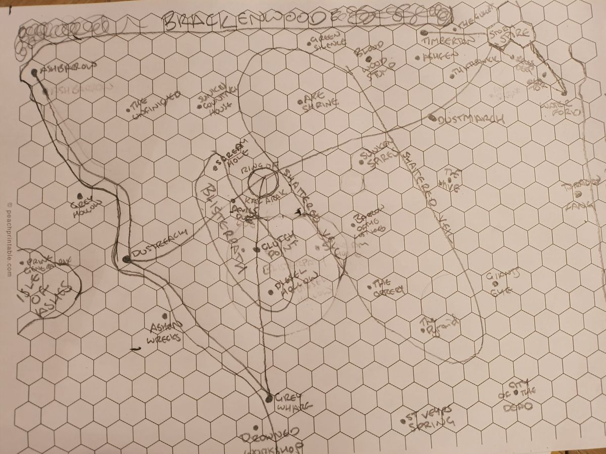
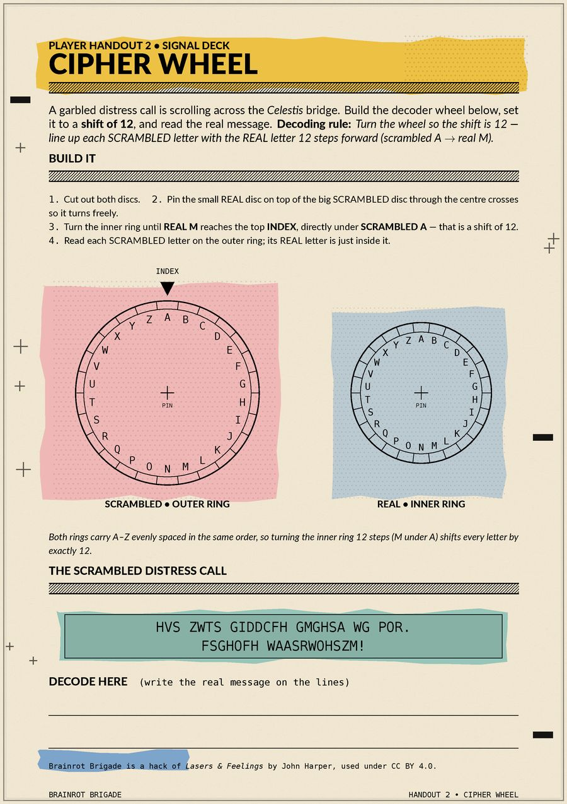
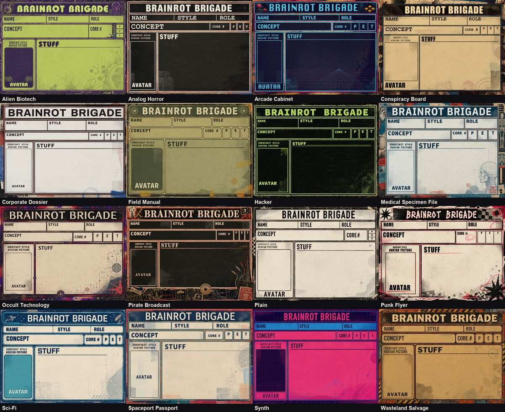

I design learning the way I run a table.
He has been running controlled simulations on small groups of humans for thirty years.
Thirty years behind the Dungeon Master’s screen taught me most of
what I know about keeping a room leaning forward. This page is
about how that turns into learning design: the dice, the stakes
and the shared story doing the teaching, not decorating it.
He calls it Dungeons & Dragons. The participants return
voluntarily, every week, for years. I have
studied this closely. I would like the method.
At a glanceExposure log
30 years running Dungeons & Dragons
Year six of a weekly campaign
3 adventures Brainrot Brigade
1,500 young people roleplay-led NCS hackathons
Why it worksMechanism
Play isn’t the wrapper. It’s the mechanism.
Most “gamified” learning bolts points and badges onto a
worksheet. That isn’t what happens at a good table. At a good
table the rules create the reasons to act: a locked door is
worth solving because the story needs it open, and a bad roll
matters because everyone watched it land.
Humans will not do a worksheet for a badge. They will, however,
spend a whole scene decoding a cipher because a fictional
starship is lost and its distress call is garbled. I have
checked. The starship is not real. The effort is.
So I take the parts of tabletop play that do the actual work,
and build learning around them.
He extracts the load-bearing parts and installs them in
classrooms. Nobody has stopped him.

What I take from the tableExtracted techniques
Scenes, not lessons
A session runs on scenes: a hook, a
problem, a payoff. I plan learning the same way, so nobody sits
waiting to be told why the next step matters. They already
want to know what’s behind the door.
He structures time so that stopping feels worse than
continuing. In other fields this would be studied.
Failure moves the story
Dice make risk playable. A failed
roll changes what happens next instead of ending the game,
which is exactly how I want learners to meet a broken program:
as the next interesting problem, not a verdict.
Under his system, error is reclassified as plot. The subjects
stop fearing it. I have filed this under “concerning”.
The table writes it too
Players care about what they made
up. Give learners real choices with visible effects and they
stop performing compliance and start owning the outcome.
He hands authorship to the participants, then lets them
believe the outcome was their idea. Frequently it was.
At the tablePrimary site
Thirty years, one screen, a lot of graph paper.
My current weekly group is in year six of Taken: Faerûn,
a Sword Coast campaign that stitches a time-travel heist,
Storm King’s Thunder and Dead in Thay into one
escalating story about a band of misfits who call themselves
the Brown Illusion. Ninety-odd documents of lore, letters,
quest logs and villain plans keep it honest.
He has sustained a single fictional war for six years. I have
read the files: ninety-six of them. The villain has a long-term
plan. So, it appears, does he. The party calls itself the Brown
Illusion. I am told this is a joke.
Alongside it I build worlds from scratch, starting in pencil on
hex paper, and the tools to run them: I wrote a web app for my
Daggerheart group, with a guided character builder,
a shared dice log and a live battle map. Running games and
building things for people to play turn out to be the same
habit.
He draws the maps by hand, then writes software to run them.
The order is instructive. The humans get the paper first.

The campaign’s long-game villain, recruiting.

The Scar of Morvain, a homebrew region, before it went anywhere near a screen.
A narrative sci-fi tabletop game, hacked from John Harper’s
one-page Lasers & Feelings, where every room of an
adventure is a puzzle that needs computational thinking to
crack: decode a distress call with a cipher wheel, work out the
order to reboot a ship’s systems, steer a robot across a grid.
Progress unlocks loot, and the loot is code. Players carry it
into a Scratch character sheet that they build and extend
between sessions, adding dice rollers, inventories, avatars and
new mechanics. Three adventures so far: Lost in the
Stars, Escape from Hollow Rock and The Boneyard
Run.
Brainrot Brigade is a tabletop game in which children believe
they are rescuing a spaceship. They are in fact decomposing
problems, sequencing dependencies and writing code to improve
their own character sheets. The children are rewarded with loot.
The loot is more programming. I find the
design very efficient and slightly frightening. Three
adventures are currently in circulation.

Player handout: build a cipher wheel, decode the distress call.

Sixteen skins for the Scratch character sheet players build on.
A two-day hackathon run on the mechanics of roleplay. Teams of
young people become start-ups and move through sprints,
challenges and story beats while designing a digital product
for a UK charity, learning Agile, basic Python and rapid
prototyping on the way. The fiction keeps a long day moving and
makes collaboration feel like progress rather than a test.
Written for the National Citizen Service and delivered to 1,500
young people in five UK cities. A Social Action Hackathon with the
Scouts was written up on the Raspberry Pi blog.
Fifteen hundred teenagers were told they were founding
start-ups. They then completed two days of Agile training
without noticing. The roleplay was not decoration. It was the
delivery mechanism. He handled the kit packing personally,
which I mention only because it seems relevant to his
character.
Brainrot Brigade is a hack of Lasers & Feelings
by John Harper, used under CC BY 4.0. Its illustrations were made
with AI image generation under my art direction.